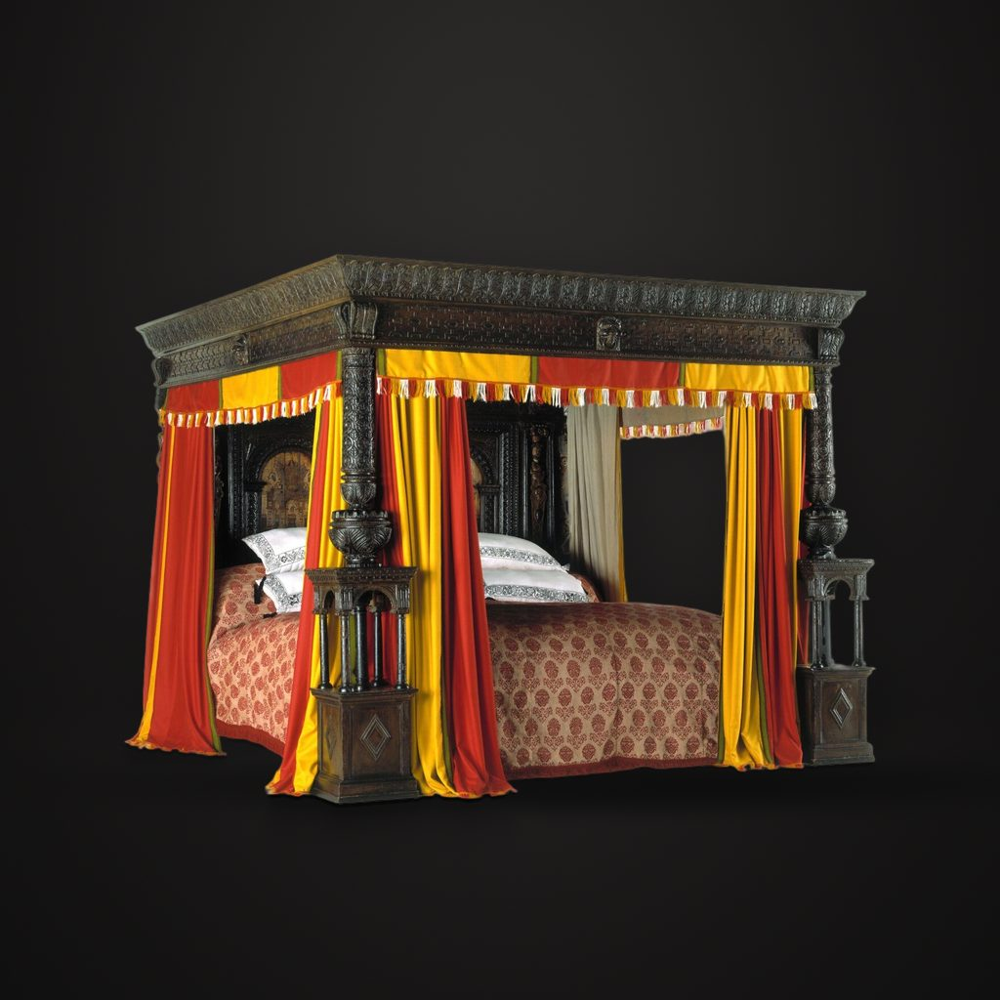

維爾大床
英國（可能出自維爾） · 1590—1600年
Great Bed of Ware
解說節錄
四根巨大的床柱，撐著一整座木頂篷。這張床光是寬度，就有三點二六公尺。
它叫《維爾大床》，製作於一五九零年到一六零零年，可能就出自英國哈特福郡的維爾。床高二點六七公尺，深三點三八公尺，用橡木雕刻，帶有鑲嵌木飾板，原本還有彩繪。維爾是倫敦以北的城鎮，床的名字也來自那裡。
— 國語講稿 · Artvery
完整解說約 4 分鐘，在 Artvery App 裡收聽。國語、粵語、內地普通話三種語音，館內對準作品即可辨識播放。
在 App Store 下載
App 免費下載，每座博物館單獨購買，一次購買永久使用。目前在台灣、香港、澳門、新加坡、馬來西亞、英國、美國、加拿大、澳洲、紐西蘭、挪威、瑞士的 App Store 提供，暫未在中國大陸上架。
作品資訊
- 文化
- 英國（可能出自維爾）
- 年代
- 1590—1600年
- 主題
- 都鐸與伊莉莎白時代的英國
維多利亞與阿爾伯特博物館參觀攻略：必看名作與路線 · 維多利亞與阿爾伯特博物館中文語音導覽